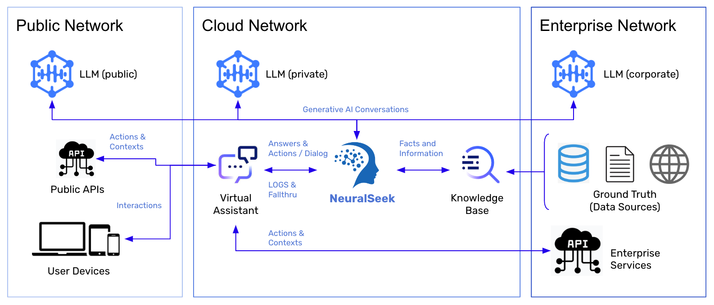

Overview

NeuralSeek is an AI-powered Answers-as-a-Service, designed to enhance information sharing and customer support within organizations’ virtual agents. NeuralSeek works by leveraging the capabilities of a sophisticated Large Language Model(LLM) and the users’ corporate KnowledgeBase, allowing virtual agents to provide concise and contextually relevant responses to user queries.
NeuralSeek empowers businesses. Unlike most AI, NeuralSeek provides a clickable path to fact check AI generated responses, data analytics to improve AI natural language, and step-by-step instructions to use AI to clean and maintain accurate resource data. It is the business solution to use AI in a professional workplace.
By leveraging a comprehensive knowledge base - Supported KnowledgeBases - NeuralSeek excels at answering user questions. What sets NeuralSeek apart from conventional AI solutions is its incorporated set of features. NeuralSeek offers a clickable path to fact-check AI response, utilization of data analytics to enhance AI natural language capabilities, and comprehensive step-by-step instructions for maintaining accuracy and clean resource data. With these additional capabilities, NeuralSeek emerges as the ideal AI solution for empowering professional businesses.